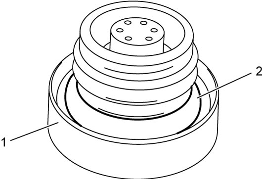

1G
| Fuel Filler Cap Inspection |
NOTICE:
Failure to use correct cap can result in EVAP leakage.
If cap requires replacement, use a cap with genuine SUZUKI parts.
Remove cap (1), and check gasket for even filler neck imprint, deterioration or any damage. If gasket (2) is defective, replace cap.

 "Expand image")